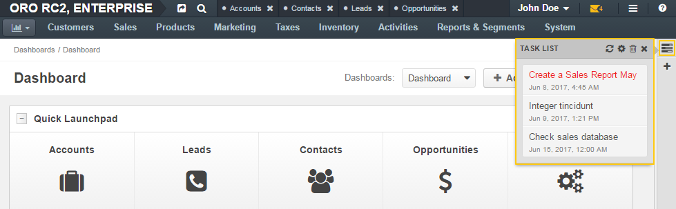
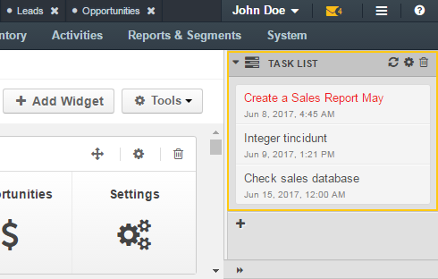
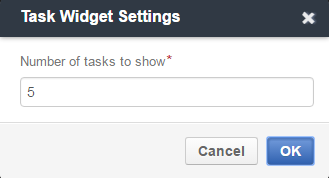

This widget displays tasks assigned to you.
The widget’s look on the minimized sidebar pannel:
The widget’s look on the maximized sidebar pannel:
For more information about the sidebar, see Sidebar Panel
On the minimized sidebar, click the Task List icon on the sidebar to expand the widget.
On the maximized sidebar, click the Expand icon on the sidebar to expand the widget.
Click the Refresh icon to actualize the list of tasks.
Click the Configure icon to set parameters for a widget.
To change a number of displayed tasks, enter the required value into the Number of tasks to show field and click OK.
Click the Delete icon to remove the widget from a dashboard.
On the minimized sidebar, the Close icon to collapse the widget.
On the maximized sidebar, click the Collapse icon to collapse the widget.